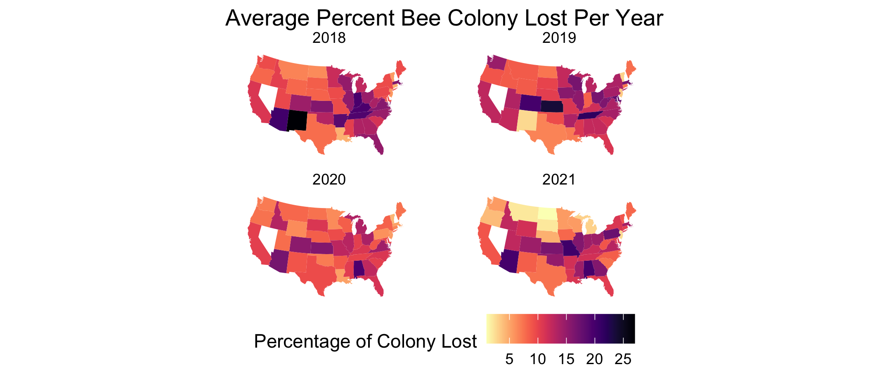

# Tidy Tuesday Week 2, 2022
# Bee Data
library(tidytuesdayR)
library(tidyverse)
library(maps)
library(viridis)
library(ggplot2)
#read in data
tuesdata <- tidytuesdayR::tt_load('2022-01-11')
colony <- readr::read_csv('https://raw.githubusercontent.com/rfordatascience/tidytuesday/master/data/2022/2022-01-11/colony.csv')
stressor <- readr::read_csv('https://raw.githubusercontent.com/rfordatascience/tidytuesday/master/data/2022/2022-01-11/stressor.csv')
#retrieve state geo data
states_map <- map_data("state")
#calculate mean of colonies lost per state 2018-2021
col_mean <- colony %>%
mutate(state = tolower(state))%>%
filter(year > 2017)%>%
group_by(state, year)%>%
summarise(col_loss=mean(na.omit(colony_lost_pct))) #na.omit critical since missing values in one month duration causes errors
#facet wrapped plot
col_mean %>%
ggplot(aes(map_id= state)) +
geom_map(aes(fill=col_loss), map = states_map)+
expand_limits(x= states_map$long, y=states_map$lat)+
coord_map("polyconic") +
scale_fill_viridis(option = "magma", direction = -1) +
theme_void()+
facet_wrap(vars(year))+
labs(fill = "Percentage of Colony Lost", title= "Average Percent Bee Colony Lost Per Year")+
theme(legend.position="bottom", plot.title = element_text(hjust =0.5))